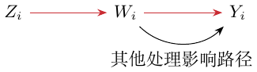

第 9 讲：工具变量回归
工具变量回归处理内生的处理效应问题，即 \(Y_i(0)\) 与 \(W_i\) 相互依赖的情形。
结构模型
从常数效应模型开始： \[Y_i(w)=Y_i(0)+w\tau,\qquad Y_i=Y_i(W_i).\tag{9.1}\] 通常，无混杂性指 \(\{Y_i(w)\}\perp W_i\)；在 (9.1) 中，它就是 \(Y_i(0)\perp W_i\)。将模型改写为
常数效应潜在结果与无混杂性 \(\textcolor{black}{\longrightarrow}\) \(Y_i=\alpha+W_i\tau+\varepsilon_i\)。
\[Y_i=\alpha+W_i\tau+\varepsilon_i,\tag{9.2}\] 其中 \(\alpha=\mathbb E[Y_i(0)]\)，\(\varepsilon_i=Y_i(0)-\mathbb E[Y_i(0)]\)。在无混杂性下，\(\mathbb E[\varepsilon_i\mid W_i]=0\)，因此将 \(Y_i\) 对 \(W_i\) 作 OLS 回归即可估计 \(\tau\)。
存在混杂时，式 (9.2) 仍成立，但 \(\mathbb E[\varepsilon_i\mid W_i]\ne0\)。此时 OLS 的目标为 \[\begin{aligned} \tau_{\mathrm{OLS}} &=\frac{\operatorname{Cov}(Y_i,W_i)}{\operatorname{Var}(W_i)}\\ &=\frac{\operatorname{Cov}(\tau W_i+\varepsilon_i,W_i)}{\operatorname{Var}(W_i)} =\tau+\frac{\operatorname{Cov}(\varepsilon_i,W_i)}{\operatorname{Var}(W_i)} . \end{aligned}\] 这个比值就是 OLS 系数。 当 \(\operatorname{Cov}(\varepsilon,W)\ne0\) 时，该系数才偏离 \(\tau\)；依赖本身不必造成线性偏差。IV 识别需要第一阶段协方差非零。
利用工具变量识别
引入 \(Z_i\)： \[Y_i=\alpha+W_i\tau+\varepsilon_i,\qquad\varepsilon_i\perp Z_i, \qquad W_i=Z_i\gamma+\eta_i.\tag{9.4}\] 由于 \(Z_i\) 与 \(\varepsilon_i\) 不相关， \[\operatorname{Cov}(Y_i,Z_i) =\operatorname{Cov}(\tau W_i+\varepsilon_i,Z_i) =\tau\operatorname{Cov}(W_i,Z_i).\] 因此 \[\tau=\frac{\operatorname{Cov}(Y_i,Z_i)}{\operatorname{Cov}(W_i,Z_i)}, \qquad \widehat\tau=\frac{\widehat{\operatorname{Cov}}(Y_i,Z_i)} {\widehat{\operatorname{Cov}}(W_i,Z_i)}.\]
我的 IV 条件检查表。
外生性：\(\varepsilon_i\perp Z_i\)。
相关性：\(\operatorname{Cov}(W_i,Z_i)\ne0\)。
排除限制：\(Z_i\) 对 \(Y_i\) 的所有影响都必须经过 \(W_i\)。

最优工具变量
允许工具变量 \(Z_i\in\mathcal Z\) 为高维： \[Y_i=\tau W_i+\varepsilon_i,\qquad\varepsilon_i\perp Z_i, \qquad Y_i,W_i\in\mathbb R.\] 对函数 \(w:\mathcal Z\to\mathbb R\)， \[\tau=\frac{\operatorname{Cov}(Y_i,w(Z_i))} {\operatorname{Cov}(W_i,w(Z_i))},\tag{9.8}\] 其中分母非零。哪个变换 \(w(\cdot)\) 最优？估计量为 \[\begin{aligned} \widehat\tau_w &=\frac{\widehat{\operatorname{Cov}}(Y_i,w(Z_i))} {\widehat{\operatorname{Cov}}(W_i,w(Z_i))}\\ &=\frac{n^{-1}\sum_i(Y_i-\overline Y)(w(Z_i)-\overline{w(Z)})} {n^{-1}\sum_i(W_i-\overline W)(w(Z_i)-\overline{w(Z)})}, \end{aligned} \tag{9.9}\] 其中 \(\overline Y=n^{-1}\sum_iY_i\)，其他均值类似定义。它求解以下估计方程： \[\frac1n\sum_i(w(Z_i)-\overline{w(Z)}) \{Y_i-\overline Y-\widehat\tau_w(W_i-\overline W)\}=0.\tag{9.10}\] 极限为 \[\sqrt n(\widehat\tau_w-\tau)\Rightarrow\mathcal N(0,V_w), \qquad V_w=\frac{\operatorname{Var}(\varepsilon_i)\operatorname{Var}(w(Z_i))} {\operatorname{Cov}(W_i,w(Z_i))^2}.\tag{9.11}\] 该极限使用独立同分布观测、所需有限矩、中心化误差和非零第一阶段极限协方差，其一阶项为\[\sqrt n(\widehat\tau_w-\tau)=\frac{n^{-1/2}\sum_i(w(Z_i)-E[w(Z)])\varepsilon_i}{\operatorname{Cov}(W,w(Z))}+o_p(1).\]
由于 \(Z_i\perp\varepsilon_i\) 且 \(\mathbb E[\varepsilon_i]=0\)， \[\operatorname{Var}\{\varepsilon_i(w(Z_i)-\mathbb E[w(Z_i)])\} =\operatorname{Var}(\varepsilon_i)\operatorname{Var}(w(Z_i)).\] 为最小化渐近方差，最大化其倒数比值：
使用方差相关比值的倒数 \(\textcolor{red}{\longrightarrow}\) 下方定义 \(w^*(\cdot)\) 的最大化问题。
\[w^*(\cdot)\in\operatorname*{arg\,max}_{w'} \frac{\operatorname{Cov}(W_i,w'(Z_i))^2}{\operatorname{Var}(w'(Z_i))}.\] 给出的解为 \[w^*(z)\propto\mathbb E[W_i\mid Z_i=z].\]
\(w^*(z)\propto E[W_i\mid Z_i=z]\) \(\textcolor{red}{\longrightarrow}\) 用 \(Z_i\) 对 \(W_i\) 的最佳预测。
记 \(m(Z)=E[W\mid Z]\)，由 Cauchy–Schwarz，\(\operatorname{Cov}(W,w)^2=\operatorname{Cov}(m,w)^2\le\operatorname{Var}(m)\operatorname{Var}(w)\)。当 \(\operatorname{Var}(m)>0\) 时，\(w=a+bm\)、\(b\ne0\) 取等号。这一最优性采用上方独立性设定。
以协变量为条件。
条件可拓展为 \(\varepsilon_i\perp Z_i\mid X_i\)，得到 \[\tau(x)=\frac{\operatorname{Cov}(Y_i,w(Z_i)\mid X_i=x)} {\operatorname{Cov}(W_i,w(Z_i)\mid X_i=x)}.\] 这启发我构建平均效应 \(\tau=\mathbb E[\tau(X)]\) 的双重稳健估计量，以及 \(\tau(\cdot)\) 的随机森林估计量。
在 \(Y=a(X)+W\tau(X)+\varepsilon\)、\(E[\varepsilon\mid Z,X]=0\) 且条件第一阶段非零时，比值等于 \(\tau(x)\)。无限制的个体异质性下，有效工具变量不必识别 CATE；适当单调性可以识别条件局部效应。
另一个有用的提醒：若 \(X_1,X_2\) 独立， \[\begin{aligned} \operatorname{Var}(X_1X_2) ={}&\operatorname{Var}(X_1)\operatorname{Var}(X_2)\\ &+\mathbb E[X_2]^2\operatorname{Var}(X_1) +\mathbb E[X_1]^2\operatorname{Var}(X_2). \end{aligned}\]
星号补充：估计方程与 delta 方法。
若函数 \(\psi_i\) 满足 \(\mathbb E[\psi_i(\theta)]=0\)，且通过下式估计 \(\widehat\theta\)： \[\frac1n\sum_{i=1}^n\psi_i(\widehat\theta)=0,\] 那么，在可微、导数非奇异及适当矩条件下， \[\sqrt n(\widehat\theta-\theta)\Rightarrow\mathcal N(0,V), \qquad V=\frac{\operatorname{Var}(\psi_i(\theta))} {\mathbb E[\psi_i'(\theta)]^2}.\]
交叉拟合与可行估计
最优工具变量为 \(w^*(z)=\mathbb E[W_i\mid Z_i=z]\)。一般步骤为：
拟合非参数的第一阶段回归，估计 \(\mathbb E[W_i\mid Z_i=z]\)，得到 \(\widehat w(\cdot)\)。
用 \(\widehat w(\cdot)\) 作为 (9.9) 中的工具变量，得到 \(\widehat\tau_w\)。
但当工具变量很多时，这会产生过拟合偏差。若用整份数据拟合 \(\widehat w(Z_i)\)，它未必独立于 \(\varepsilon_i\)：拟合工具变量可能继承 \(W_i\) 对 \(\varepsilon_i\) 的依赖。
我的过拟合例子。
设 \(W_i=\alpha+\beta Z_i+\eta_i\)，拟合值为 \(\widehat W_i=\widehat\alpha+\widehat\beta Z_i\)。原结构方程是 \(Y_i=\gamma+\delta W_i+\varepsilon_i\)；代入拟合处理后， \[Y_i=\gamma+\delta\widehat W_i+\{\varepsilon_i+\delta(W_i-\widehat W_i)\}.\]
用拟合处理 \(\widehat W_i\) 改写 \(\textcolor{blue}{\longrightarrow}\) 回到结构方程 \(Y_i=\gamma+\delta W_i+\varepsilon_i\)：残差也随之改变。
我的担心是：过拟合第一阶段可能把 \(W_i\) 中与 \(\varepsilon_i\) 相关的噪声学进去，并不能消除这种依赖。
如果 \(Z\) 是纯噪声，相关性条件就不成立。交叉拟合避免重复使用同一观测的噪声，却不能制造有效的第一阶段。
改用 \(K\) 折交叉拟合。用 \(k(i)\) 表示观测 \(i\) 所属的折， \[\widehat\tau= \frac{\widehat{\operatorname{Cov}}(Y_i,\widehat w^{(-k(i))}(Z_i))} {\widehat{\operatorname{Cov}}(W_i,\widehat w^{(-k(i))}(Z_i))}.\tag{9.13}\] 在所述采样设定下，对应的拟合工具变量独立于该观测的误差。特别地，如果 \(\widehat w^{(-k(i))}(z)\) 对 \(\mathbb E[W_i\mid Z_i=z]\) 均方一致，那么 (9.13) 与 (9.9) 的 oracle 版本渐近等价。将这个一致性写为
\[\lim_{n\to\infty}\mathbb E[(\widehat w_n-\mathbb E[W\mid Z])^2]=0,\]
其中 \(n\) 为样本量。 在第一阶段不退化、矩条件适当且第一阶段均方一致时，交叉拟合估计具有 oracle 极限。独立性应条件于各自训练折理解；训练样本重叠并不使全部拟合观测彼此独立。
非参数工具变量回归
前面的模型对处理 \(W_i\) 是线性的：\(Y_i=W_i\tau+\varepsilon_i\)。
将模型推广为 \[Y_i=g(W_i)+\varepsilon_i,\qquad Z_i\perp\varepsilon_i, \qquad Y_i,W_i\in\mathbb R,\quad Z_i\in\mathcal Z,\] 其中 \(g\) 是一般的光滑函数。
提醒：不能直接将 \(Y_i\) 对 \(W_i\) 作非参数回归，因为 \[\mathbb E[Y_i\mid W_i=w]=g(w)+\mathbb E[\varepsilon_i\mid W_i=w],\] 而条件误差均值未必为零。
由于 \(Z_i\perp\varepsilon_i\) 且 \(\mathbb E[\varepsilon_i]=0\)， \[\begin{aligned} \mathbb E[Y_i\mid Z_i=z] &=\mathbb E[g(W_i)+\varepsilon_i\mid Z_i=z]\\ &=\mathbb E[g(W_i)\mid Z_i=z] =\int_{\mathbb R}g(w)f(w\mid z)\,dw. \end{aligned} \tag{9.15}\] 其中 \(f(w\mid z)\) 是给定 \(Z_i=z\) 时 \(W_i\) 的条件密度。
学习步骤：
用交叉拟合估计 \(\widehat f(w\mid z)\)。
选择合适的函数类 \(\mathcal G\)，通过最小化损失估计 \(g\)： \[\widehat g\in\operatorname*{arg\,min}_{g\in\mathcal G} \frac1n\sum_{i=1}^n\left\{ Y_i-\int_{\mathbb R}g(w)\widehat f^{(-k(i))}(w\mid Z_i)\,dw \right\}^{\!2}.\tag{9.16}\]
实际求解时，可用基函数展开逼近 \(g\)： \[g_K(w)=\sum_{k=1}^K\beta_k\psi_k(w),\] 其中 \(\psi_k\) 是预先确定的基函数。随着 \(K\) 增大，\(g_K\) 对 \(g\) 的逼近更好。于是 \[\widehat\beta\in\operatorname*{arg\,min}_\beta \frac1n\sum_{i=1}^n \{Y_i-\widehat m^{(-k(i))}(Z_i)^{\mathsf T}\beta\}^2,\tag{9.17}\] 其分量为 \[\widehat m_k^{(-k(i))}(Z_i)= \int_{\mathbb R}\psi_k(w)\widehat f^{(-k(i))}(w\mid Z_i)\,dw.\] 我的理解：对 \(g(\cdot)\) 的一致估计需要条件；积分方程 (9.15) 很复杂，而基展开 (9.17) 将它变成回归。还要付出正则化的代价，这与交叉拟合第一阶段 (9.13) 的思路相联系。
识别与正则化
令 \((Th)(z)=E[h(W)\mid Z=z]\)。识别要求它在所选函数类上为单射：\(Th=0\) 蕴含 \(h(W)=0\) 几乎处处成立，即完备性。逆运算仍可能病态，因此要用筛维数或其他正则化控制不稳定性与逼近误差。